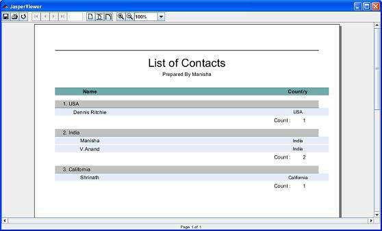

JasperReports - Report Groups
Groups in JasperReports help organize data on report in a logical manner.A report group represent a sequence of consecutive records in the data source that have something in common, like the value of a certain report field. A report group is defined by the <group> element. A report can have any number of groups. Once declared, groups can be referred to throughout the report.
A report group has three elements:
Group expression: This indicates the data that must change to start a new data group.
Group header section: Helps place label at the beginning of grouped data.
Group footer section: : Helps place label at the end of grouped data.
During the iteration through the data source at report-filling time if the value of the group expression changes , a group rupture occurs and the corresponding <groupFooter> and <groupHeader> sections are inserted in the resulting document.
Report group mechanism does not perform any sorting on the data supplied by the data source. Data grouping works as expected only when the records in the data source are already ordered according to the group expressions used in the report.
Group Attributes
The <group> element contains attributes that allow us to control how grouped data is laid out. The attributes are summarized in table below:
| Attribute | Description |
|---|---|
| name | This is mandatory. It references the group in report expressions by name. It follows the same naming conventions we that we mentioned for the report parameters, fields, and report variables. It can be used in other JRXML attributes when you want to refer a particular report group. |
| isStartNewColumn | When set to true, each data group will begin on a new column. Default value is false |
| isStartNewPage | When set to 'true, each data group will begin on a new page. Default value is false |
| isResetPageNumber | When set to true, the report page number will be reset every time a new group starts. Default value is false |
| isReprintHeaderOnEachPage | When set to true, the group header will be reprinted on every page. Default value is false |
| minHeightToStartNewPage | Defines minimum amount of vertical space needed at the bottom of the column in order to place the group header on the current column. The amount is specified in report units. |
| footerPosition | Renders position of the group footer on the page, as well as its behavior in relation to the report sections that follow it.Its value can be: Normal, StackAtBottom, ForceAtBottom, CollateAtBottom. Default value is Normal |
| keepTogether | When set to true, prevents the group from splitting on its first break attempt |
Example
Let's add a group (CountryGroup) to existing report template (Chapter Report designs). Occurance of each country is counted and the count is displayed as the group footer. In the group header the count of each record is prefixed. The revised report template (jasper_report_template.jrxml) is as follows. Save it to C:\tools\jasperreports-5.0.1\test directory:
<?xml version="1.0"?>
<!DOCTYPE jasperReport PUBLIC
"//JasperReports//DTD Report Design//EN"
"http://jasperreports.sourceforge.net/dtds/jasperreport.dtd">
<jasperReport xmlns="http://jasperreports.sourceforge.net/jasperreports"
xmlns:xsi="http://www.w3.org/2001/XMLSchema-instance"
xsi:schemaLocation="http://jasperreports.sourceforge.net/jasperreports
http://jasperreports.sourceforge.net/xsd/jasperreport.xsd"
name="jasper_report_template" pageWidth="595"
pageHeight="842" columnWidth="515"
leftMargin="40" rightMargin="40" topMargin="50" bottomMargin="50">
<parameter name="ReportTitle" class="java.lang.String"/>
<parameter name="Author" class="java.lang.String"/>
<queryString>
<![CDATA[]]>
</queryString>
<field name="country" class="java.lang.String">
<fieldDescription><![CDATA[country]]></fieldDescription>
</field>
<field name="name" class="java.lang.String">
<fieldDescription><![CDATA[name]]></fieldDescription>
</field>
<sortField name="country" order="Descending"/>
<sortField name="name"/>
<variable name="CountryNumber" class="java.lang.Integer"
incrementType="Group" incrementGroup="CountryGroup"
calculation="Count">
<variableExpression><![CDATA[Boolean.TRUE]]></variableExpression>
</variable>
<group name="CountryGroup" minHeightToStartNewPage="60">
<groupExpression><![CDATA[$F{country}]]></groupExpression>
<groupHeader>
<band height="20">
<textField evaluationTime="Group" evaluationGroup="CountryGroup"
bookmarkLevel="1">
<reportElement mode="Opaque" x="0" y="5" width="515"
height="15" backcolor="#C0C0C0"/>
<box leftPadding="10">
<bottomPen lineWidth="1.0"/>
</box>
<textElement/>
<textFieldExpression class="java.lang.String">
<![CDATA[" " + String.valueOf($V{CountryNumber}) + ". "
+ String.valueOf($F{country})]]>
</textFieldExpression>
<anchorNameExpression>
<![CDATA[String.valueOf($F{country})]]>
</anchorNameExpression>
</textField>
</band>
</groupHeader>
<groupFooter>
<band height="20">
<staticText>
<reportElement x="400" y="1" width="60" height="15"/>
<textElement textAlignment="Right"/>
<text><![CDATA[Count :]]></text>
</staticText>
<textField>
<reportElement x="460" y="1" width="30" height="15"/>
<textElement textAlignment="Right"/>
<textFieldExpression class="java.lang.Integer">
<![CDATA[$V{CountryGroup_COUNT}]]>
</textFieldExpression>
</textField>
</band>
</groupFooter>
</group>
<title>
<band height="70">
<line>
<reportElement x="0" y="0" width="515"
height="1"/>
</line>
<textField isBlankWhenNull="true" bookmarkLevel="1">
<reportElement x="0" y="10" width="515"
height="30"/>
<textElement textAlignment="Center">
<font size="22"/>
</textElement>
<textFieldExpression class="java.lang.String">
<![CDATA[$P{ReportTitle}]]>
</textFieldExpression>
<anchorNameExpression><![CDATA["Title"]]>
</anchorNameExpression>
</textField>
<textField isBlankWhenNull="true">
<reportElement x="0" y="40" width="515" height="20"/>
<textElement textAlignment="Center">
<font size="10"/>
</textElement>
<textFieldExpression class="java.lang.String">
<![CDATA[$P{Author}]]>
</textFieldExpression>
</textField>
</band>
</title>
<columnHeader>
<band height="23">
<staticText>
<reportElement mode="Opaque" x="0" y="3"
width="535" height="15"
backcolor="#70A9A9" />
<box>
<bottomPen lineWidth="1.0"
lineColor="#CCCCCC" />
</box>
<textElement />
<text><![CDATA[]]>
</text>
</staticText>
<staticText>
<reportElement x="414" y="3" width="121"
height="15" />
<textElement textAlignment="Center"
verticalAlignment="Middle">
<font isBold="true" />
</textElement>
<text><![CDATA[Country]]></text>
</staticText>
<staticText>
<reportElement x="0" y="3" width="136"
height="15" />
<textElement textAlignment="Center"
verticalAlignment="Middle">
<font isBold="true" />
</textElement>
<text><![CDATA[Name]]></text>
</staticText>
</band>
</columnHeader>
<detail>
<band height="16">
<staticText>
<reportElement mode="Opaque" x="0" y="0"
width="535" height="14"
backcolor="#E5ECF9" />
<box>
<bottomPen lineWidth="0.25"
lineColor="#CCCCCC" />
</box>
<textElement />
<text><![CDATA[]]>
</text>
</staticText>
<textField>
<reportElement x="414" y="0" width="121"
height="15" />
<textElement textAlignment="Center"
verticalAlignment="Middle">
<font size="9" />
</textElement>
<textFieldExpression class="java.lang.String">
<![CDATA[$F{country}]]>
</textFieldExpression>
</textField>
<textField>
<reportElement x="0" y="0" width="136"
height="15" />
<textElement textAlignment="Center"
verticalAlignment="Middle" />
<textFieldExpression class="java.lang.String">
<![CDATA[$F{name}]]>
</textFieldExpression>
</textField>
</band>
</detail>
</jasperReport>
The java codes for report filling remains unchanged. The contents of the file C:\tools\jasperreports-5.0.1\test\src\com\tutorialspoint\JasperReportFill.java are as below.
package com.tutorialspoint;
import java.util.ArrayList;
import java.util.HashMap;
import java.util.Map;
import net.sf.jasperreports.engine.JRException;
import net.sf.jasperreports.engine.JasperFillManager;
import net.sf.jasperreports.engine.data.JRBeanCollectionDataSource;
public class JasperReportFill {
@SuppressWarnings("unchecked")
public static void main(String[] args) {
String sourceFileName =
"C://tools/jasperreports-5.0.1/test/jasper_report_template.jasper";
DataBeanList DataBeanList = new DataBeanList();
ArrayList<DataBean> dataList = DataBeanList.getDataBeanList();
JRBeanCollectionDataSource beanColDataSource =
new JRBeanCollectionDataSource(dataList);
Map parameters = new HashMap();
/**
* Passing ReportTitle and Author as parameters
*/
parameters.put("ReportTitle", "List of Contacts");
parameters.put("Author", "Prepared By Manisha");
try {
JasperFillManager.fillReportToFile(
sourceFileName, parameters, beanColDataSource);
} catch (JRException e) {
e.printStackTrace();
}
}
}
The contents of the POJO file C:\tools\jasperreports-5.0.1\test\src\com\tutorialspoint\DataBean.java are as below:
package com.tutorialspoint;
public class DataBean {
private String name;
private String country;
public String getName() {
return name;
}
public void setName(String name) {
this.name = name;
}
public String getCountry() {
return country;
}
public void setCountry(String country) {
this.country = country;
}
}
The contents of the file C:\tools\jasperreports-5.0.1\test\src\com\tutorialspoint\DataBeanList.java are as below:
package com.tutorialspoint;
import java.util.ArrayList;
public class DataBeanList {
public ArrayList<DataBean> getDataBeanList() {
ArrayList<DataBean> dataBeanList = new ArrayList<DataBean>();
dataBeanList.add(produce("Manisha", "India"));
dataBeanList.add(produce("Dennis Ritchie", "USA"));
dataBeanList.add(produce("V.Anand", "India"));
dataBeanList.add(produce("Shrinath", "California"));
return dataBeanList;
}
/**
* This method returns a DataBean object,
* with name and country set in it.
*/
private DataBean produce(String name, String country) {
DataBean dataBean = new DataBean();
dataBean.setName(name);
dataBean.setCountry(country);
return dataBean;
}
}
Report Generation
We will compile and execute the above file using our regular ANT build process. The contents of the file build.xml (saved under directory C:\tools\jasperreports-5.0.1\test) are as below.
The import file - baseBuild.xml is picked from chapter Environment Setup and should be placed in the same directory as the build.xml.
<?xml version="1.0" encoding="UTF-8"?>
<project name="JasperReportTest" default="viewFillReport" basedir=".">
<import file="baseBuild.xml" />
<target name="viewFillReport"
depends="compile,compilereportdesing,run"
description="Launches the report viewer to preview
the report stored in the .JRprint file.">
<java classname="net.sf.jasperreports.view.JasperViewer"
fork="true">
<arg value="-F${file.name}.JRprint" />
<classpath refid="classpath" />
</java>
</target>
<target name="compilereportdesing"
description="Compiles the JXML file and
produces the .jasper file.">
<taskdef name="jrc"
classname="net.sf.jasperreports.ant.JRAntCompileTask">
<classpath refid="classpath" />
</taskdef>
<jrc destdir=".">
<src>
<fileset dir=".">
<include name="*.jrxml" />
</fileset>
</src>
<classpath refid="classpath" />
</jrc>
</target>
</project>
Next, let's open command line window and go to the directory where build.xml is placed. Finally execute the command ant -Dmain-class=com.tutorialspoint.JasperReportFill (viewFullReport is the default target) as follows:
C:\tools\jasperreports-5.0.1\test>ant -Dmain-class=com.tutorialspoint.JasperReportFill
Buildfile: C:\tools\jasperreports-5.0.1\test\build.xml
clean-sample:
[delete] Deleting directory C:\tools\jasperreports-5.0.1\test\classes
[delete] Deleting: C:\tools\jasperreports-5.0.1\test\jasper_report_template.jasper
[delete] Deleting: C:\tools\jasperreports-5.0.1\test\jasper_report_template.jrprint
compile:
[mkdir] Created dir: C:\tools\jasperreports-5.0.1\test\classes
[javac] C:\tools\jasperreports-5.0.1\test\baseBuild.xml:28: warning:
'includeantruntime' was not set, defaulting to build.sysclasspath=last;
set to false for repeatable builds
[javac] Compiling 7 source files to C:\tools\jasperreports-5.0.1\test\classes
compilereportdesing:
[jrc] Compiling 1 report design files.
[jrc] log4j:WARN No appenders could be found for logger
(net.sf.jasperreports.engine.xml.JRXmlDigesterFactory).
[jrc] log4j:WARN Please initialize the log4j system properly.
[jrc] log4j:WARN See http://logging.apache.org/log4j/1.2/faq.html#noconfig
for more info.
[jrc] File : C:\tools\jasperreports-5.0.1\test\jasper_report_template.jrxml ... OK.
run:
[echo] Runnin class : com.tutorialspoint.JasperReportFill
[java] log4j:WARN No appenders could be found for logger
(net.sf.jasperreports.extensions.ExtensionsEnvironment).
[java] log4j:WARN Please initialize the log4j system properly.
viewFillReport:
[java] log4j:WARN No appenders could be found for logger
(net.sf.jasperreports.extensions.ExtensionsEnvironment).
[java] log4j:WARN Please initialize the log4j system properly.
BUILD SUCCESSFUL
Total time: 18 seconds
As a result of above compilation, a JasperViewer window opens up as in the screen below:
Here we see that the each country is grouped and the count of occurance of each country is dispalyed at the footer of each group.